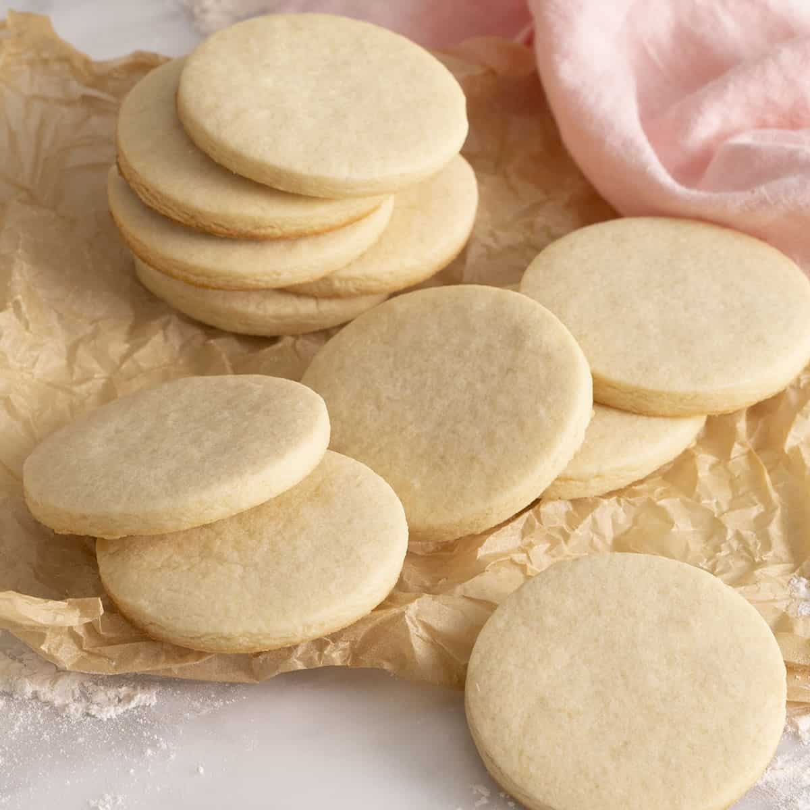

Sugar Cookies

Description
Light, Sweet, Crisp and Delicious! These are some amazingly rich and tender cookies your family will love!
Ingredients
- 1/4 cup soft shortening
- 1/4 cup soft butter
- 1/2 cup sugar
- 1 egg
- 1 Tbls. milk or cream
- 1 tsp. flavoring (vanilla or lemon or a combination of the two)
- 1 1/4 cup sifted flour
- 1 tsp. cream of tartar
- 1/2 tsp. baking soda
- 2 teaspoons baking soda
- 1/4 tsp. salt
Directions
- Mix shortening, butter, sugar and egg together thoroughly.
- Stir in milk and flavoring.
- Sift dry ingredients together and stir in.
- Chill dough.
- Roll very thin (1/16"). Cut into desired shapes.
- Place on lightly greased baking sheet, sprinkle with sugar.
- Bake at 425 F for 5-7 minutes, until delicately browned.
Recipes Menu
Recipes Home